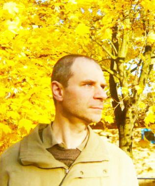

JOACHIM M WERDIN E LA SUA ESPERIENZA

Joachim M Werdin ha iniziato il suo viaggio quando aveva sedici anni cominciando a praticare regolarmente il digiuno e sperimentandone gli effetti su se stesso. Inedia, breatharianismo, nutrimento di luce, solare o pranico sono tutti bandoli della stessa matassa. Dopo decenni di esperienza con i digiuni, nel 2001 Joachim ha sentito che per lui era giunto il momento della transizione verso il breatharianismo. Questa esperienza, durante la quale egli non ha mai assunto cibo o liquidi, si è protratta per quasi due anni, passati i quali egli ha reinvertito il processo, ritornando verso un’alimentazione tradizionale, allo scopo di acquisire maggior conoscenza possibile di entrambi i fenomeni e di tutti gli effetti e le conseguenze fisiche, mentali e spirituali a essi associati. In questo libro è racchiusa tutta la sua esperienza sul fenomeno dell’“inedia totale” e quindi sui metodi più vantaggiosi per adattare il proprio corpo a liberarsi dalla dipendenza dall’assunzione di cibo e liquidi, oltre che su tutte le forme di digiuno, sulle vere funzioni ed esigenze del corpo umano, sull’espansione della propria sfera di Coscienza e sul consapevole sviluppo spirituale. Viene qui esposto uno stile di vita che offre moltissimi vantaggi dal punto di vista sanitario e salutistico, economico, ecologico, ambientale, nonché dal punto di vista dell’inquinamento e del rispetto delle risorse del nostro pianeta per interagire e integrarsi con esso in modo più positivo e armonioso. Joachim, andando in direzione opposta a ciò che il condizionamento sociale impone al pensare collettivo, esplora ed espande i diversi argomenti che riguardano la nutrizione pranica, offrendo informazioni pertinenti su soluzioni concrete, relative ai problemi che si incontrano attraversando questo cammino. Il libro è un prontuario di esperienze, ricerche e consigli che potranno soddisfare chiunque voglia avvicinarsi all’argomento, oltre che dal punto di vista pratico, anche da quello intelletuale e filosofico, bramandone ancora le informazioni in una forma materiale. L’autore afferma, come sottolinea più volte all’interno di questo libro, che diventare breathariano non dovrebbe essere l’obiettivo principale, ma piuttosto dovrebbe essere uno dei passi, realizzato in modo naturale, sulla strada del consapevole sviluppo fisico, mentale e spirituale dell’essere umano.
Estratto dal retro-corpertina del libro.